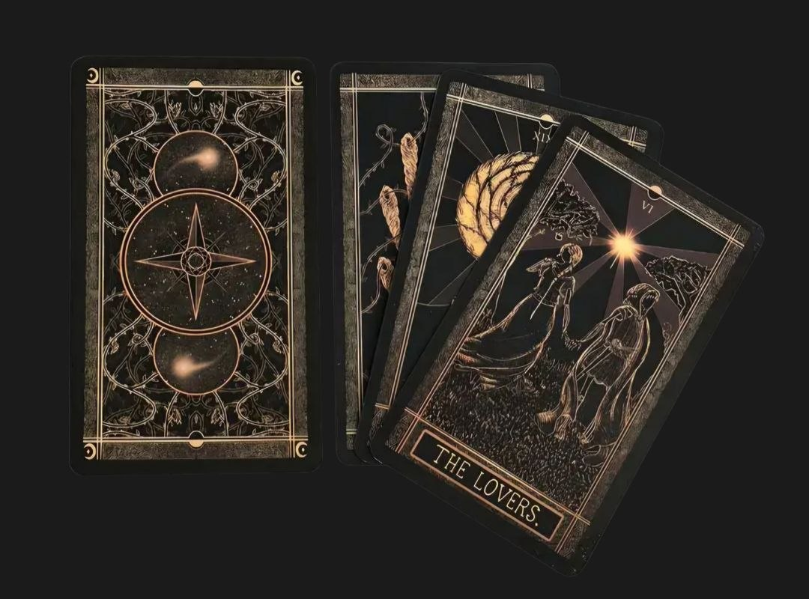
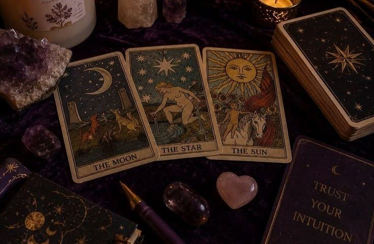

✦ Objav význam tarotu ✦

Tarot nie je presný nástroj na predpovedanie budúcnosti, ale systém symbolov, ktorý pomáha lepšie pochopiť situácie, emócie a rozhodnutia.
Táto stránka ti po môže zorientovať sa v základných častiach tarotu, pochopiť rozdiel medzi Veľkou a Malou arkánou a vyskúšať si jednoduchý výklad alebo výber karty.
Nejde o vieru — ide o interpretáciu, pozorovanie a premýšľanie.
Čo je tarot?
Tarot je súbor symbolických kariet, ktorý sa tradične používa na interpretáciu situácií, premýšľanie nad otázkami alebo hľadanie nového pohľadu na vlastný život. Napriek tomu, čo si mnohí myslia, tarot nie je presná predpoveď budúcnosti. Skôr funguje ako nástroj na reflexiu – ukazuje možné významy, súvislosti a psychologické vzorce.
Je dôležité pristupovať k nemu skepticky: karty „nevedia“ nič konkrétne. Ich význam vzniká až v interpretácii človeka, ktorý ich číta. Preto ten istý výklad môže mať pre rôznych ľudí úplne odlišný zmysel.
Veľká arkána
Veľká arkána predstavuje 22 kariet, ktoré zobrazujú kľúčové životné témy, zmeny a archetypy. Často sa považujú za „hlavnú kostru“ celého tarotu.
Zoznam kariet Veľkej arkány:
Tieto karty sa väčšinou interpretujú ako silné životné momenty, vnútorné zmeny alebo dôležité rozhodnutia. Nie sú „dobré“ alebo „zlé“ – ich význam závisí od kontextu.
Malá arkána
Malá arkána sa zameriava na každodenný život, situácie a praktické emócie. Obsahuje 56 kariet a delí sa na štyri farby (súdy), ktoré predstavujú rôzne oblasti života.
Každá farba obsahuje karty od esa po kráľa, ktoré ukazujú vývoj danej energie – od začiatku až po zrelosť.
Jednoduchý výklad

Jednoduchý výklad tarotu zvyčajne znamená vytiahnutie jednej alebo niekoľkých kariet, ktoré odpovedajú na konkrétnu otázku. Napríklad:
Výklad však nie je objektívna pravda. Funguje skôr ako zrkadlo – karty odrážajú tvoje myšlienky, obavy alebo možnosti, ktoré si možno už aj sama vnútorne cítiš, len ich ešte neformulovala.
Preto je dobré brať výsledok ako podnet na premýšľanie, nie ako rozhodnutie.
Výber karty
Klikni na tlačidlo a nechaj osud vybrať kartu.
?